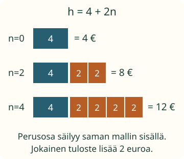

<link rel="stylesheet" href="lesson.css">
<section data-varying-lesson>

<section data-teaching-step="1" data-lesson-role="teaching-step">
<p> Aava suunnittelee näyttelytulosteita. Sovitussa varausmallissa perusosa maksaa 4 euroa ja jokainen tuloste 2 euroa. Miten eri suunnitelmat kuvataan yhdellä säännöllä?</p>
<h2>Kirjain voi saada eri arvoja</h2>
<p><strong>Tavoite:</strong> Vaihdan määrää ja selitän, mikä muuttuu ja mikä pysyy samana.</p>
</section>


<section data-teaching-step="2" data-lesson-role="teaching-step">
<h3>1. Sama sääntö, monta tulostemäärää</h3>
<p>Merkitään tulosteiden määrää kirjaimella n ja hinnan lukuarvoa euroina kirjaimella h. Tässä mallissa <strong>h = 4 + 2n</strong>. Merkintä 2n tarkoittaa 2 × n.</p>
<figure data-lesson-role="worked-example"><figcaption>Sininen osa on sama perusosa. Oransseja kahden euron osia on yksi jokaista tulostetta kohti.</figcaption></figure>
<p>Kun n = 2, h = 4 + 2 × 2 = 8. Kun n = 4, h = 4 + 2 × 4 = 12. Molemmat ovat sallittuja suunnitelmia. Nyt ei etsitä yhtä piilossa olevaa n:ää, vaan n saa vaihtua suunnitelmasta toiseen.</p>
<p>Luvut 4 ja 2 pysyvät <em>tämän mallin sisällä</em>. Sen sijaan n ja h saavat eri arvoja. Yksi tuloste lisää tuo hintaan 2 euroa. Kahden tulosteen lisäys tuo 4 euroa; koko hinnan ja sen muutoksen välillä on ero.</p>
</section>


<section data-teaching-step="3" data-lesson-role="teaching-step">
<h3>Kirjaimen viereen ei liimata numeroa</h3>
<p>Kun n = 3, lasketaan 4 + 2 × 3 = 10. Merkintä 2n ei muutu luvuksi 23. Lisäksi pelkkä 2 × 3 = 6 olisi vain tulosteiden osuus: perusosa 4 pitää myös ottaa mukaan.</p>
</section>


<section data-teaching-step="4" data-lesson-role="teaching-step">
<h3>2. Siirto: muuttuva määrä voi pienentää toista</h3>
<p>Aavalla on 12 tyhjää korttia. Kun n korttia käytetään, jäljellä on <strong>r = 12 − n</strong>. Kun n = 2, jäljellä on 10. Kun n = 3, jäljellä on 9. Käytettyjen määrä kasvaa, mutta jäljellä olevien määrä pienenee. Muuttuva määrä ei tarkoita aina aikaa tai kasvavaa tulosta.</p>
</section>


<section data-teaching-step="5" data-lesson-role="teaching-step">
<p data-lesson-role="question"><strong>Ennusta:</strong> Varausmallissa n muuttuu kolmesta neljään. Mikä osa hinnasta muuttuu?</p>
<details data-lesson-role="answer"><summary>Ajatus</summary><p>Tulosteiden osuus kasvaa 2 euroa. Varausosa 4 euroa säilyy. Hinta muuttuu 10 eurosta 12 euroon.</p></details>
</section>


<section data-teaching-step="6" data-lesson-role="teaching-step">
<div data-practice hidden>
<h3>Tutki määrää ja tee ennuste</h3>
<fieldset data-audience-columns><legend>Vaihtele saman mallin määrää</legend><div data-visual-column><p><strong data-model-title></strong></p>
<div data-scene></div>
<p>Tutkimuskuvan määrä n = <strong data-count></strong>.</p>
<button type="button" data-action="minus">Yksi vähemmän</button>
<button type="button" data-action="plus">Yksi enemmän</button>
<button type="button" data-action="context">Tutki jäljellä olevia kortteja</button></div><div data-response-column><h4>Ennusta valitulle määrälle</h4>
<label>Ennustettava määrä <select data-target aria-label="Ennustettava määrä n"></select></label>
<p data-target-note></p>
<label>Ennuste <input data-answer type="text" inputmode="numeric" autocomplete="off" maxlength="4" aria-label="Ennustamasi hinnan tai jäljellä olevan määrän lukuarvo"></label>
<span data-answer-unit></span>
<button type="button" data-action="check">Tarkista ennuste</button>
<button type="button" data-action="clear">Poista ennuste</button>
<p data-feedback role="status" aria-live="polite"></p>
<details data-calculation-help data-lesson-role="teaching-step"><summary>Näytä tämän määrän lasku avuksi</summary><p data-calculation></p></details></div></fieldset></div>
<details data-lesson-role="hint"><summary>Apua</summary><p>Erota perusosa ja muuttuva osa. Varausmallissa laske ensin 2 × n ja lisää sitten 4. Korttimallissa vähennä käytetyt kortit alkuperäisestä 12:sta. Kuvan ja valmiin laskun katsominen on sallittua tukea.</p></details>
</section>


<section data-teaching-step="7" data-lesson-role="teaching-step">
<details data-lesson-role="teaching-step"><summary>Kokeile lisää</summary><p>Jos varausmalli vaihtuisi, myös numero 4 voisi vaihtua. Se on vakio tässä sopimuksessa, ei kaikissa mahdollisissa tilanteissa. Muuttuja ei myöskään pakota jokaista siihen liitettyä suuretta muuttumaan: jos maksu olisi aina 4 euroa tulostemäärästä riippumatta, n voisi vaihdella hinnan pysyessä samana.</p></details>
</section>

<details class="teacher" data-lesson-role="teacher-note"><summary>Aikuiselle ja ilman ruutua</summary><p>Luokat 7–9. M-ALG-04 required, M-ALG-05 vahva tuki. Yhteenlasku, vähennyslasku ja kahden kertotaulu ovat esimerkin sisältöoletuksia; sijoituksen voi näyttää tukena. M79-EXPR-EVAL ei muutu uudeksi kanoniseksi portiksi. Kaava on annettu, joten oppijalta ei väitetä havaitun sen itsenäistä muodostamista.</p><p>Käytä perusosan 4 € korttia ja kahden euron tulostekortteja. Lisää ja poista kortteja, myös useita kerrallaan. Nollan tulosteen suunnitelmassa varausosa on edelleen 4 € juuri tässä kuvitteellisessa mallissa. n on kokonaisluku 0–6; korttimallissa 0–12. Nämä rajat liittyvät laskettaviin esineisiin. Muuttuvat suureet eivät yleisesti rajoitu kokonaislukuihin.</p><p>Tutkimuskuva havainnollistaa annettua sääntöä. Ennuste tarkistetaan erikseen valitulle määrälle. Näytetty lasku on tukea, eikä sen avulla annettu vastaus osoita itsenäistä laskusujuvuutta, viivästettyä muistamista tai yleistä riippuvuuksien ymmärtämistä. Mitään ei tallenneta eikä puhetta vahvisteta. Molemmissa malleissa on =-merkki: kirjaimen roolia ei ratkaista sen perusteella.</p></details>

<section data-teaching-step="8" data-lesson-role="teaching-step">
<p data-lesson-role="question"><strong>Lopuksi:</strong> Mitkä arvot vaihtuvat varausmallin eri suunnitelmissa? Mitkä luvut säilyvät saman mallin sisällä?</p>
</section>

</section>
